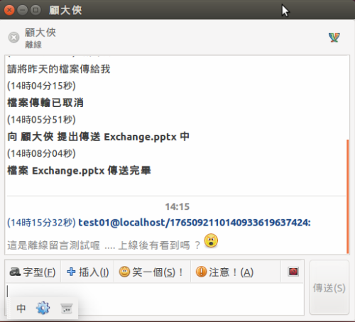
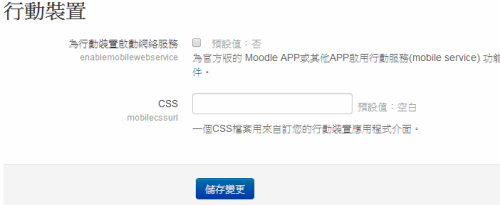
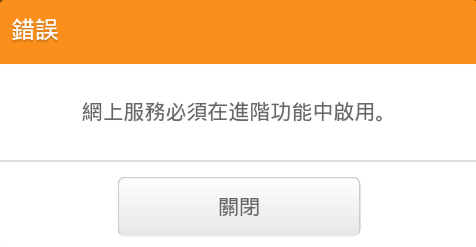

企業 Moodle 進階管理與安全整合應用

作者簡介：顧武雄， Microsoft MVP、MCITP 與 MCTS 認證專家、台灣微軟 Technet、Tech Day、ebcast、MVA 特約資深顧問講師。目前個人 Linux 著作有 Linux 企業現場應用系統、Linux 私有雲社群網路現場實戰。
引言：針對知名的 Moodle 線上學習系統的建置，對於企業 IT 人員並非只是把它安裝好之後，就開放給所有員工來使用。而是必須進一步思考，如何藉由此系統來提升學員與老師之間的互動關係，並且提供一個更易於使用與安全的數位學習環境。本文將以實戰指引的方式，來告訴所有已導入或是即將導入 Moodle 線上學習系統的企業 IT，如何為您公司的 Moodle 網站，打造出更安全、更流暢的數位學平台來改善同仁們的學習品質。
簡介
筆者記得早期剛接觸 Moodle 線上學習系統的原因，是因為發現國內外有許多高中職以上的學校，都在使用它來解決學生線上學習的需要。然而如今它被應用的廣泛程度已不再局限於教育單位，而是逐漸地被擴展到企業的 E-learning 管理需求之中。
曾經就有好幾個企業客戶與醫療機構的 IT 單位，跑來詢問筆者關於 E-learning 系統導入的選擇，值得一提的是它們的共同需求，除了希望有課程管理、教材管理、試題管理、成績單管理等一般性功能之外，更重要的是還要能夠整合企業現行的 IT 基礎建設，那就是 Microsoft Active Directory 的網域環境，如此一來所有知識工作者，才能夠不必再去牢記一組新的帳戶密碼，而且還能夠為系統管理人員省去許多維護上的負擔。
想想看有了企業線上學習系統各基本模組，以及整合了 Active Directory 的功能之後，企業單位最在意的層面還會有哪一些呢？答案就是需要的 IT 預算、系統的安全性疑慮、人員協同作業效率的提升。根據筆者這一兩年間對 Moodle 系統的深入研究之下，發現它的整體設計居然不僅能夠符合教育單位的需要，也能夠滿足企業內部教育訓練管理上的需要，主要的原因就是它在整合能力的設計上相當周到。至於企業主最關心的 IT 預算問題，初期除了需要 IT 人力的投入以及基礎硬體建置的成本之外，可以大幅度省去許多一般商用軟體授權費用的支出，這包括了一些與它進行整合應用的開放原始碼套件，所節省掉的周邊軟體授權費用。
在接下來的實戰內容中，筆者就要朝企業 IT 們最關心的以下幾個功能面，來講解如何解決當下 Moodle 進階管理與安全整合應用的問題。
- 整合即時訊息服務：人員協同作業效率的提升，在 Moodle 系統中首先第一步，必須藉由內建的即時聊天室與 eJabberd XMPP Server 的整合應用，來改善學員與老師之間的互動問題，進而提升學習品質。
- Moodel 行動 App：解決了人員學習互動的溝通問題，還必須提供行動學習的功能，才能夠讓整個線上學習中的人員協同作業效率更加提升。在此我們必須藉由 Moodel 的行動 App，來提供企業教師與學員們一個無所不在的數位學習環境。
- 網站安全管理：從使用者登入的一瞬間到上手後的使用過程，Moodel 線上學習網站都必須做到自動監控可疑的安全問題，並且在第一時間阻絕可能的網路攻擊與病毒入侵問題，更重要的還得讓系統管理員能夠輕鬆掌握所有的安全問題。
- Active Directory SSO 方案：只要您企業的人員名錄系統是以標準 LDAP 服務，或是 Microsoft Active Directory 為基礎，Moodle 就能透過內建的 LDAP 整合功能，來完全解決人員單一登入 (SSO) 的帳戶管理問題，有效避免掉人員因需要記一組新帳密的抗拒問題。
整合即時訊息服務 - eJabberd XMPP Server
在講解有關於 Moodle 與 Jabberd XMPP Server 的整合應用之前，先來了解一下其內建的即時聊天室功能。當老師或助教在課程的主題內容之中，有放入即時聊天室的模組時，學員們便可以在點選後開啟如圖 1 所示的頁面，在這裡首先您可以檢視到目前正在聊天室中的成員有哪一些，然後就可以點選進入聊天室的超連結。
▲圖 1：學員即時聊天室
如圖 2 所示便是進入到即時聊天室的操作介面，您除了可以在此傳送文字的交談訊息之外，還可以自訂交談介面的佈景主題。對於任何想要離開聊天室的人員，只要直接關閉視窗即可。
▲圖 2：線上即時交談
對於老師與學員之間的即時訊息互動內容，許多時候學員們可能會希望能夠隨時查看過去的交談記錄，以解決某一些在學習過程中所發生的疑難雜症。針對這一項需求，學員們只要回到即時聊天室的首頁，然後點選 [查看過去對話時段的內容] 之連結，即可開啟類似如圖 3 所示的 [聊天對話時段] 頁面，在此您就可以點選所要查看的時段之歷史交談訊息。
▲圖 3：查看各聊天時段記錄
如圖 4 所示便是查看某時段即時聊天的歷史訊息範例。點選 [繼續] 將可以選擇查看其它時段的交談內容。
▲圖 4：檢視歷史聊天內容
透過 Moodle 本身內建的即時聊天功能，似乎在行動性與即時性上還不是那麼理想，若是能夠進一步整合安裝於所有學員與老師電腦中的即時訊息軟體，那肯定可以改善即時交談的效率。為了解決這項線上學習過程中的通訊問題，我們需要在 Moodle 的網路環境之中，增加一項通訊服務的整合，那就是 eJabberd。究竟什麼是 eJabberd 呢？eJabberd 是一個 XMPP 的應用程式伺服器，主要提供了跨平台的即時訊息 (IM) 服務，它不僅在伺服端的服務可運行在各種 Linux、FreeBSD、indos 以及 Mac OS X 等平台上，能夠與它結合使用的用戶端免費 IM 軟體更是不勝枚舉，令人更讚嘆的是許多開放原始碼的應用系統，都能夠與它進行 IM 功能的整合，其中本文所介紹與建置的 Moodle 網站就是其中之一。透過 Moodle 與 eJabberd 的整合應用之下，讓管理者、老師、助教以及學生彼此間的溝通方式，不再只是透過線上討論區以及聊天室來進行互動而已，而是可以直接經由 eJabberd 服務的連線，來進行更全面的即時線上互動。
接下我們將實際來動手建立一個 eJabberd XMPP Server 在 Ubuntu 作業平台之中，然後讓indos、Linux 以及 Moodle 網站的線上人員，皆可以體驗無縫的流暢通訊品質。其中indos 與 Linux 的用戶端應用程式，筆者選用了同樣是免費的 Pidgin 網路即時通套件，來做為連接 eJabberd 服務的最佳解決方案。
如圖 5 所示首先請開啟 Ubuntu 的命令列視窗，然後下達 sudo apt-get install eJabberd，來完成最新版本 eJabberd XMPP Server 的安裝。在此可以發現整個 eJabberd 包含相依套件，僅需要 24.1MB 的磁碟空間，實在是非常輕巧！
▲圖 5：安裝 eJabberd 套件
接著我們必須為新的 eJabberd XMPP Server 建立一個管理員帳戶，如此一來後續才能夠透過他在 eJabberd 網站上管理人員帳戶。請如圖 6 所示，下達 sudo 命令參數 ejabberdctl register admin localhost passord。如此便完成新增一個預設密碼為 passord 的 admin帳戶。
▲圖 6：eJabberd 管理員帳號註冊
為了讓前面步驟中所建立的帳戶，可以真正擁有 eJabberd 管理員的權限，緊接著還必須修改位在 /etc/ejabberd 路徑下的 ejabberd.cfg 設定檔。您可以透過 vi 或 vim 文字編輯器來進行修改即可。如圖 7 所示開啟後請找到位在 [Admin user] 區域中的第一列敘述，請加入 “admin” 字串即可，也就是我們所建立的管理員帳戶名稱。儲存並結束編輯。
▲圖 7：修改 eJabberd 設定檔
完成 eJabberd 設定檔的修改之後，請如圖 8 所示下達 sudo service ejabber restart 命令參數，來完成 eJabberd 服務的重新啟動。
▲圖 8：重新啟動 eJabberd 服務
在成功重新啟動 eJabberd 服務之後，請開啟瀏覽器連線至此伺服器的網址，也就是 IP 位址加上預設的 5280 通訊埠口。如圖 9 所示，此時將會出現登入驗證視窗，請輸入前面步驟中所建立的管理員帳戶與密碼。點選 [Sign in] 登入。
▲圖 9：登入 eJabberd 網站
如圖 10 所示便是 eJabberd 服務的網站，在目前的本機服務之中由於還沒有任何的使用者連線，因此線上使用者數量會呈現為零。在這個網站中您除了可以管理使用者帳戶，還可以檢視道目前已註冊帳戶的數量以及上線中的人員數量。進一步則可以配置存取控制清單以及存取規則設定。
▲圖 10：eJabberd網站管理介面
請如圖 11 所示點選至 [Users] 頁面中來新增使用者。在輸入新的帳戶與密碼之後點選 [Add User] 即可。完成新增之後將會出現在下方的使用者清單之中。
▲圖 11：註冊新使用者
若想知道目前有哪一些人員正在上線中，只要如圖 12 所示點選至 [Online Users] 頁面中即可。這裡所呈現的線上人員清單，包含了經由任何支援 eJabberd 用戶端軟體的連線，以及各種應用系統整合的網站，例如 Moodle 人員的登入。
▲圖 12：檢視線上使用者
一旦確認了 eJabberd 服務的正常運作之後，我們就可以來到 Moodle 網站上，以 Moodle 管理員的身份登入，準備進行連接 eJabberd 服務的設定。請在 [網站管理] \ [外掛] \ [訊息傳送] 的節點中，開啟如圖 13 所示的 [Jabber訊息] 設定頁面。在此必須輸入的欄位值有主機位址 (FQDN 或 IP 位址)、伺服器名稱、用戶名稱、密碼以及連接埠。其中伺服器的欄位值範例中是輸入 localhost，這是因為筆者的 eJabberd 服務套件是安裝在與 Moodle的 相同主機之中。至於指定的用戶名稱與密碼，則必須預先在 eJabberd 網站上完成新增。連接埠採用預設的 5222 即可。點選 [儲存變更]。
請注意！如果您的 eJabberd XMPP Server 是安裝在與 Moodles 網站不同主機的 Linux 作業系統中，那麼除了需要注意主機與伺服器名稱的連線設定之外，也必須特別注意本機防火牆的設定，如果有啟用防火牆功能，務必特別設定開放 TCP 5222 的連接埠口。
▲圖13：Moodle 整合 Jabber 服務設定
在完成了 Moodle 整合 Jabber 服務設定之後，每一位有 Jabber 帳戶的人員都可以去修改自己在 Moodle 網站上的個人資料，以便加入 Jabber 的訊息通知設定。如圖 14 所示在此您可以決定哪一些項目要使用彈出式通知、Jabber 訊息通知以及 Email 通知。此外還可以決定是否要在收到簡訊時，發出提醒聲音，或是您也可以設定僅接收來自通訊錄使用者所發送的簡訊通知。最後請記得將自己的 Jabber 帳戶完整名稱，輸入在 Jabber ID 的欄位之中。點選 [更新個人資料]。
▲圖 14：個人訊息通知設定
接下來您應該要每一位 Moodle 的用戶端使用者，安裝筆者所推薦的最佳 Jabber 用戶端軟體，那就是 Pidgin 套件。首先來完成 Ubuntu Linux 版本下的 Pidgin 套件安裝。如圖 15 所示，我們可以在 [軟體中心] 的介面中，輸入 Jabber 關鍵字便可以搜尋到許多支援 Jabber 的用戶端套件，這包括了 Pidgin、emesene、qutIM、Kopete 等等。請點選位在Pidgin 項目中的 [更多資訊] 按鈕繼續。
▲圖 15：安裝 Pidgin 網路即時通套件
如圖 16 所示在此除了可以看到 Pidgin 套件的基本介紹與預覽畫面之外，還可以看到能夠與它結合使用的相關附加元件清單，這其中包括了可結合在 KDE3 與 GNOME2 中的System tray 功能元件，以及可進行訊息透通加密的元件、整合舊版 Microsoft Exchange Server 即時訊息服務的元件等等。您可以根據實際的應用需求來勾選安裝即可。
▲圖 16：附加套件選用
如圖 17 所示第一次使用 Pidgin 時將會開啟此歡迎頁面。點選 [新增] 按鈕準備來連線我們在 eJabberd XMPP Server 中的帳號。
▲圖 17：初次使用 Pidgin
在如圖 18 所示的 [基本設定] 頁面中，首先必須選擇通訊協定為 [XMPP]，然後輸入使用者名稱、網域名稱以及密碼。如果此用戶端電腦是您專屬使用的，建議您可以將 [記住密碼] 勾選。必要的話您還可以自訂帳號別名，以及決定是否使用新郵件通知與設定好友圖示。此外值得注意的是 Pidgin 通訊介面，實際上是可以同時連線多個不同的 IM 服務系統，也就是說您可以在後續繼續新增其他帳號，例如：AIM、Yahoo、Facebook、Sametime、Groupise 等等。點選至[進階設定]頁面繼續。
▲圖 18：基本設定
在如圖 19 所示的 [進階設定] 頁面中，除了必須設定 eJabberd XMPP Server 的連接埠以及伺服器位址之外，還可以決定是否要對於通訊過程進行加密處理。點選 [加入] 按鈕完成設定。
▲圖 19：進階設定
由於筆者選擇了加密連線的保護機制，因此在連線登入的過程中將會出現如圖 20 所示的 SSL 憑證警示訊息。點選 [接受] 即可。
▲圖 20：SSL 憑證確認
接下來我們先不用急著學習有關 Pidgin 的操作介面，而是再來完成一部 Pidgin for indos 的安裝。不過由於安裝過程相當簡單，因此筆者不再細談。您只要如圖 21 所示以瀏覽器連線到 https://pidgin.im/donload/indos 網址，即可下載到最新版本的 Pidgin 免費軟體。
▲圖 21：indos 版本 Pidgin下載
無論是安裝哪一個作業系統下的 Pidgin 軟體，在成功連線登入之後除了可以檢視到所有連絡人的狀態燈號之外，還可以像如圖 22 所示一樣手動修改自己目前的狀態燈號。此外您也可以透過 [新增狀態] 功能，來加入自訂的狀態設定。
▲圖 22：狀態燈號設定
在好友的管理部份，只要在如圖 23 所示的 [好友] 功能選單中，就可以透過 [新增好友] 與 [新增群組] 功能，來加入多位好友並完成自訂群組的分類。當好友數量很多時，為了方便檢視還可以選擇好友清單的排序方式。
▲圖 23：好友管理選單
如圖 24 所示便是 [新增好友] 的設定頁面，您只要輸入好友的完整帳號名稱以及選擇要將此好友加入的群組即可。至於 [別名] 的輸入則是有助於連絡人很多時的快速識別，因為可能名字相同的人會很多。點選 [加入]。
請注意！之後您仍可以透過好友的右鍵選單，來設定好友的別名。而對於非好友的連絡人則可以使用移除或是封鎖功能。
▲圖 24：新增好友
緊接著另一端上線中的 Pidgin 用戶，將會收到如圖 25 所示的邀請訊息，您可以決定是要先送出即時訊息回應他，還是直接點選 [拒絕] 或 [給予認證]。
▲圖 25：邀請訊息
完成了連絡人的新增之後，就可以與連絡人開始來進行即時訊息的通訊。如圖 26 所示不同的訊息類型，系統將會自動以不同的顏色來呈現，而發送者也可以自訂字型、小圖示等功能。
▲圖 26：即時訊息傳送
除了即時訊息的傳遞之外，也可以進行檔案的互傳。檔案傳送的方式可以透過 [插入] 按鈕的點選，或是直接桌面上的檔案拖曳至交談區即可。這時候接收端將會出現如圖 27 所示的提示訊息，點選 [接收] 即可。
▲圖 27：檔案傳送確認
如圖 28 所示便可以從交談視窗中，看到整個檔案傳送從提出到傳送完畢的過程記錄。
▲圖 28：檔案傳送成功
當您所要聯繫的人目前並沒有登入 eJabberd XMPP Server，這時候您除了可以透過一般電話以及 Email 等方式來連絡對方之外，若事情並不緊急則可以選擇以 Pidgin 來傳送離線訊息給他即可。如圖 29 所示在此交談視窗中，您會發現當對方在離線狀態時，整個訊息視窗會呈現灰色的狀態，不過您仍可以傳送訊息給對方。

▲圖 29：離線留言
如圖 30 所示便是對方恢復上線狀態時，所看到的離線留言訊息的範例，可以再次進行線上的即時交談了。
▲圖 30：觀看離線留言
許多時候您可能需要查詢和某人的交談記錄，例如某重要連絡人曾經交代您辦理的事物，或是曾經答應過您的事情等等，時間一久為了查詢真相，只要先開啟此連絡人的交談視窗，然後如圖 31 所示點選位在 [交談] 下拉選單中的 [觀察歷史記錄] 繼續。
▲圖 31：交談選單
如圖 32 所示便是觀察歷史交談記錄的視窗，您可以根據不同日期來挑選要查看的交談記錄，如果當日的交談內容相當多時，則可以透過關鍵字的輸入，來迅速找到您要的交談記錄。
▲圖 32：觀看歷史記錄
若人員有多人即時訊息的交談需求，則可以透過[好友]的功能選單中選擇 [新增聊天室]，並且給予新聊天室一個主題，然後再將欲邀請的好友一一加入即可。如果想要查看目前有哪一些聊天室，則可以透過如圖 33 所示的 [工具] 選單中點選 [聊天室清單] 即可。如果您想要讓 Pidgin 的功能更多更強，可以點選同樣位在 [工具] 選單中的 [模組] 繼續。
▲圖 33：Pidgin 工具選單
如圖 34 所示在 [模組清單] 頁面中，您可以勾選想要附加的各項模組功能，例如筆者就覺得其中的 [彈出式通知] 模組就相當不錯用，其它像是佈景主題設定、好友備註、交談視窗用色等等也都是值得加裝的模組。
▲圖 34：模組清單
在前面有關 Pidgin 即時訊息交談範例中，我們僅示範了跨平台的即時訊息與檔案傳遞，接下來則必須試試透過 Pidgin 用戶端與 Moodle 線上人員的即時訊息交談。如圖 35 所示，在此我們直接將訊息傳給一位同時擁有 Jabber 帳戶以及 Moodle 帳號整合的人員繼續。
▲圖 35：發送訊息給 Moodle 線上人員
如圖 36 所示在此這位 Moodle 的線上人員，便會立即接收到好友從 Pidgin 用戶端所傳送過來的即時訊息。在這裡我要讀者們想想看，這位 Moodle 的線上人員，是否能夠進行訊息的回應給 Pidgin 用戶端人員呢？
▲圖 36：Moodle 線上人員接收訊息
Moodel行動App的安裝與使用
如今無論是企業私有雲端上的何種應用系統，只要關係到行動協同商務的議題，往往就必須提供智慧型手機與平板的相關 App，以提升人員作業的效率。當我們已將 Moodle 系統推廣到所有的部門來使用時，讓各單位使用者能夠行動管理自己的檔案、課程以及通訊，肯定就會成為一項必備的應用需求。在自建的 Moodle 線上學習系統的管理中，若想要提供使用者行動 App 的存取功能，除了需要讓使用者安裝專屬的 [Moodle Mobile] App 之外，在伺服端的部分也必須完成相關設定才能夠讓它正常運行。如圖 37 所示，首先必須在 [進階] 設定頁面中，將 [啟用eb服務] 勾選繼續。值得注意的是此功能的啟用，也可以讓研發人員用來整合您公司現有的其它網站應用系統，例如：EIP。
▲圖 37：進階設定
接著必須開啟如圖 38 所示的 [行動裝置] 頁面，請將其中的 [為行動裝置啟動網路服務] 設定勾選。點選 [儲存變更] 即可。

▲圖 38：啟用行動裝置存取服務
完成了上述兩項有關於 Moodle 行動存取的設定之後，接下來就可以請所有人員安裝 Android 版本的 Moodle Mobile 之 App，如圖 39 所示您只要在 [Play 商店] 中，就可以透過關鍵字找到此 App。此 App 是採用 HTML5 的設計方式來呈現，因此能夠跨行動裝置平台來使用。
▲圖 39：Moodle 行動 App
完成 Moodle Mobile 的 App 安裝之後，第一次執行時將會出現如圖 40 所示的登入頁面，請輸入您公司的 Moodle 網址，然後點選 [新增] 按鈕以及完成帳戶密碼的輸入與登入。必須注意的是如果您尚未完成前面步驟中的 eb 服務啟用，將會出現如圖 41 所示的 [網上服務必須在進階功能中啟用] 的錯誤訊息。

▲圖 40：登入 Moodle 網址

▲圖 41：連線錯誤
如圖 42 所示便是成功以 Moodle Mobile 的 App 登入後的操作介面。在此您將可以進行通知、檔案上傳、行事曆、我的課程以及此 App 設定等管理。首先我們可以點選 [行事曆] 來查看一下。
▲圖 42：個人管理介面
在如圖 43 所示的 [行事曆] 頁面中，將可以看到目前由相關課程所安排好的行程，預設會顯示三個月以內的行事曆，您可以點選 [顯示三個月以上] 按鈕，來查看更多的行程安排，必須注意的是群組的事件並不會出現在此頁面中。
▲圖 43：檢視個人行事曆
如圖 44 所示則是個人儲存區的檔案上傳管理。您可以選擇要上傳的檔案類型，包括了從瀏覽相本中取得或是從相機拍照、錄製聲音以及錄製影片中的檔案挑選來上傳即可。
▲圖 44：即時上傳檔案
如圖 45 所示便是正在上傳檔案中的顯示頁面，待上傳成功之後，後續您將可以透過電腦的瀏覽器連線，來存取這一些經由其它行動裝置所上傳的檔案。
▲圖 45：上傳檔案中
接著是如圖 46 所示的 [我的課程管理]，在此您將可以展開您自己目前所選修的課程，然後來查看其內容或是參與者資訊。
▲圖 46：檢視我的課程
如圖 47 所示便是一門課程內容的範例。從這裡可以進一步點選想要查看的主題項目繼續。
▲圖 47：檢視課程內容
如圖 48 所示進到課程主題的內容之中，將可以點選所要下載的課程教材，或是開啟特定的課程功能，例如：討論區、互動聊天室等等。
▲圖 48：教材清單
想要知道目前有哪一些人員和我們選修同樣的課程，只要點選開啟此課程的 [參與者] 頁面即可。如圖 49 所示在參與者清單的頁面中，您可以點選想要查看的人員詳細資訊。
▲圖 49：檢視課程學員清單
如圖 50 所示開啟學員的詳細資訊之後，將可以查看到此人員的電子郵件地址、城市、國家以及描述。進一步可以將他加入通訊錄、新增筆記或是傳送訊息給他。
▲圖 50：檢視人員資訊
如圖 51 所示，便是點選傳送訊息給學員的範例。該名學員將可以一樣透過 Moodle Mobile App 來查看訊息，或是以瀏覽器登入 Moodle 網站來查看訊息。
▲圖 51：傳送訊息
請注意！除了 Android 系列的智慧行動裝置之外，如果您使用的是 indos Phone 或是 indos 8 以上的平板電腦，也同樣可以在它的 [市集] 功能中，找到 Moodle Mobile App 來進行安裝與使用。
網站安全管理
當企業因應行動協同商務的需要，而將 Moodle 網站發佈於網際網路時，雖然可以解決人員隨時隨地存取的便利性，但卻也有可能因此而讓網站遭受的惡意攻擊或入侵。不過還好 Moodle 已內建了許多和網站安全性存取控管的功能設定，可有效杜絕現有已知的各種安全性問題。首先請如圖 52 所示，點選至 [網站管理] \ [安全性] \ [HTTP安全性] 頁面。在此主要可以決定是否要強制使用 HTTPS 的登入要求、僅用安全的 Cookies 以及防止登入表單自動儲存密碼功能，其中若想要使用 HTTPS 的登入要求，還必須先讓目前的 Apache 網站設定啟用 HTTPS 功能才可以。
▲圖 52：HTTP 安全性設定
在如圖 53 所示的 [IP 封鎖器] 頁面中，可以設定允許進入以及封鎖的 IP 位址清單，這項控管功能有助於在多點營運處與分公司的架構中來規劃，因為一旦總公司與各點分支辦公室之間的連線方式，是橫跨網際網路來進行通訊時，就可以將各分支辦公室的真實 IP 位址範圍，加入至 [允許進入的 IP 清單] 之中。此外您可以特別啟用讓允許進入的 IP 清單處理，優先於封鎖的 IP 清單處理。點選 [儲存變更]。
▲圖 53：IP 封鎖器設定
當有惡意人士嘗試登入公司的 Moodle 網站時，系統管理人員最好能夠知道。此時就必須仰賴如圖 54 所示的 [通知] 功能設定。在此首先您可以決定是否要向指定用戶顯示登入失敗的日誌。接著再指定要發送登入失敗的 Email 通知給哪一些管理人員，如果想要讓所有的網站管理人員都能夠收到此安全通知的話，請直接選取 [每一位可以改變網站環境配置的人] 即可，否則只要選取特定的管理人員。最後還可以設定 [郵件通知的門檻]，以避免收到大量登入失敗的 Email 通知。
▲圖 54：安全通知設定
Moodle 網站的安全防範措施，除了解決可能的網路連線安全問題之外，更要解決病毒程式入侵的問題，畢竟在這網站上除了會有大量的數位教材上傳之外，許多學員以及老師通過個人電腦、智慧型手機以及平板，所上傳至個人儲存區的檔案更是需要加以檢測，以避免公司網路內發生嚴重的病毒擴散問題。
在如今許多的 Open Source 應用系統之中都有支援 ClamAV 的防毒功能，在目前 Moodle 所內建的安全整合功能之中也同樣不例外的。請開啟如圖 55 所示的 [防毒] 設定頁面。在此您必須先輸入 ClamAV 路徑，一般預設的路徑都是 /usr/bin/clamscan。需要的話則還可以指定隔離目錄，必須注意的是若沒有正確設定可讓此網站存取的本機路徑，系統對於夾帶有病毒的檔案將會直接進行刪除。
最後請將 [當上傳檔案時使用 ClamAV 檢查] 設定勾選，以及決定當 ClamAV 因故無法正常執行時處理原則，若選擇預設的 [檔案沒有問題] 設定，任何檔案都將會被放行。相反的如果選擇了 [檔案有病毒] 的設定，則檔案都會被轉移到指定的隔離區或是刪除。完成設定點選 [儲存變更]。
▲圖 55：防毒整合設定
完成了 Moodle 網站與 ClamAV 防毒的整合設定之後，如果您目前 Moodle 所在的 Ubuntu 作業系統中，尚未安裝 ClamAV 掃毒套件。請立刻開啟如圖 56 所示的 [Ubuntu軟體中心] 介面，輸入 Clam 關鍵字來找到與安裝 [ClamTK-ClamAV 前端程式] 的套件即可。
▲圖 56：Clam AV防毒安裝
如圖 57 所示便是成功完成 Moodle 網站與 Clam AV 防毒整合的結果。在此只要用戶端的使用者，上傳了任何可能夾帶惡意程式的檔案時，都會收到類似範例中的錯誤訊息，而導致檔案上傳失敗。
▲圖 57：成功攔截病毒檔案
Clam AV 如何進行手動掃毒？
如同一般 indos 個人電腦的防毒程式一樣，不定期的手動掃描本機系統環境，有助於避免可能藏匿其中的惡意程式，這包括了檔案型病毒、木馬程式，巨集型病毒等等。在 Clam AV 防毒程式中，想要進行手動掃毒作業，只要先切換到預設的 /usr/bin 路徑下，然後下達 sudo ./clamscan -i -r /home 命令參數，即可針對指定的資料夾進行全面的病毒檢測。其中 /home 便是所要檢測的目標。完成掃毒作業之後，系統將會列出已感染病毒的檔案清單。
整合 Active Directory 身份驗證之應用
LDAP 是許多 IT 部門用來集中控管組織人員名錄的最佳方法，在企業界中 Microsoft 的 Active Directory 運用最為廣泛，其次則是有像是 IBM 的 Domino 或 TDS 以及 Novell 的 eDirectory 等等。而在學術單位則是因版權因素多半是以 Open LDAP 為主，僅有少數是使用 Active Directory 為 IT 基礎建設。但無倫是哪一種 LDAP 的目錄服務，Moodle 皆支援與它們進行人員帳戶驗證的整合。
接下來筆者就要以示範 Moodle 與 Active Directory 的人員帳戶整合，解決企業 IT 在導入 Moodle 線上學習系統後的帳戶驗證管理問題。首先請以系統管理員身份登入至 Moodle 網站，然後開啟位在 [網站管理] \ [外掛] \ [身份認證] 下的 [管理身份認證] 頁面。如圖 58 所示，在此請找到 [使用一個 LDAP 伺服器] 插件項目並點選其 [設定] 連結繼續。
▲圖 58：管理身份認證
在如圖 59 所示的頁面中，主要必須設定的欄位有主機網址、可區辨的名稱、密碼、用戶類型、情境、用戶屬性、以及物件類別。其中 [主機網址] 必須以 ldap://FQDN 或是 ldap://IP 位址方式來表示。而 [可區辨的名稱] 與 [密碼] 則必須是輸入準備用以連線查詢 Active Directory 的帳戶與密碼，帳戶同樣必須輸入 LDAP 的路徑格式。在 [用戶類型] 部份請選擇 [MS Active Directory]，至於 [情境] 則不一定是只輸入到最上層的網域名稱，而是可以依照實際需要輸入到組織單位 (OU) 層級的路徑。在 [用戶屬性] 欄位中請輸入 samaccountname。在 [物件類別] 部份，一般都是輸入 user 即可，而非回傳所有物件。
▲圖 59：設定使用一個LDAP伺服器
如圖 60 所示緊接著在 [資料對應] 區域中的設定也是相當重要的，因為它必須正確對應 Active Directory 中使用者物件的屬性欄位，才能夠讓後續的 Active Directory 使用者成功登入，並且同步正確的必要資料至 Moodle 資料庫之中。請依序在 [名字] 欄位中請輸入 givenName、[姓] 欄位請輸入 sn、[電子郵件信箱] 輸入 mail、[縣 / 市]輸入 l、國家輸入 co即可。儲存與離開。
▲圖 60：資料欄位對應
接下來我們可以來開啟位在 indos Server 2012 R2 中的網域使用者物件屬性，來查看上述 LDAP 的資料對應欄位值。首先如圖 61 所示，在此可以看到範例中的人員姓氏與名字皆是以中文輸入，以利於帳戶的識別。至於 [電子郵件] 欄位，則是作為後續與 Moodle 網站通訊的相同 Email 地址。
▲圖 61：AD人員一般屬性
在如圖 62 所示的 [帳戶] 頁面中，可以看到使用者帳戶登入名稱，也就是相對應到 Moodle LDAP 設定中，所輸入在 [用戶屬性] 欄位中的 samaccountname 值。而這裡主要可以控管使用者帳戶的鎖定、登入時段、登入電腦以及設定帳戶到期日等等。
▲圖 62：AD人員帳戶屬性
關於人員屬性欄位的進階設定部份，則可以切換到如圖 63 所示的 [屬性編輯器] 頁面。在此您可以發現 co 欄位對應的就是國家，l 對應的則是縣市。簡言之，後續任何有關於 LDAP 欄位名稱的對照，皆只要開啟此頁面即可核對。
▲圖 63：AD人員帳戶編輯器
如圖 64 所示回到 Moodle 網站的用戶管理頁面，便可以看到筆者經由 Active Directory 帳號來登入 Moodle 網站的結果。在系統預設的狀態下，凡是經由 LDAP 與 Active Directory 連線後所自動建立的帳戶，未來都會在他們每一次登入後，自動更新異動過的欄位資料。
▲圖 64：用戶檢視
結論
Moodle 如今幾乎已經是線上學習 (E-learning) 的代名詞，在 Open Source 的領域中有著難以動搖的地位，它的擴充性、延展性以及整合能力甚至於超越了許多付費的商用系統。進一步對於企業 IT 研發人員而言，由於可以很輕易的藉由 eb Service 的間接方式，來完成與企業現有的其它網站應用系統進行整合，這包括了人資管理系統、資訊入口網站、文管系統、單一簽入系統等等，這點優勢讓它有充分的機會，發展至企業的 IT 應用環境之中，解決長久以來知識管理系統架構上的一塊缺口。總言之期待在未來幾年持續向上的發展下，能夠看見更加出色的 Moodle。